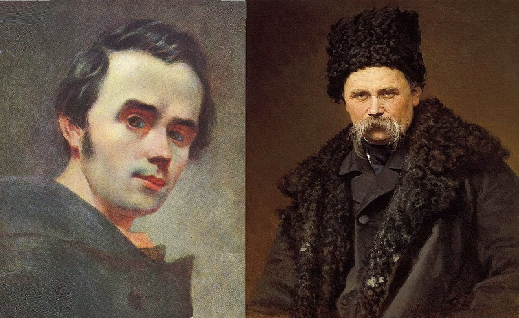

Шевченко Тарас Григорович
(1814-1861)
Зміст
1)Біографія
Дитинство
Тарас Шевченко, з'явився на світ 25 лютого 1814 року (9 березня за новим календарем).
Він був третьою дитиною в сім’ї кріпаків, що проживали в селі Моринці, Київської губернії.
Молодість
Жив,творив,малював)
Сарість
У 1857 році зусиллями друзів Т. Шевченка повернули з заслання й у 1858 році він прибув до Москви, потім до Петербурга. У 1859 році приїхав в Україну, але перебував під наглядом поліції. Йому заборонили постійно проживати в Україні і зобов'язали переїхати до столиці. Десятирічне заслання, хвороби призвели до передчасної смерті Т. Шевченка 26 лютого (за новим стилем 10 березня) 1861 року. Поховали його спочатку на Смоленському цвинтарі у Петербурзi, у травні 1861 року прах перевезли на Чернечу (тепер Тарасову) гору поблизу Канева.
2)Творчість
Вірші та твори
Т. Шевченко почав писати вірші у другій половині 30-х років. У 1840 році в Петербурзі вийшла його перша збірка поезій "Кобзар", у 1845 році - героїчно-романтична поема "Гайдамаки". В 1843-45 роках він написав цикл поезій "Три літа" (центральним твором якого є "Сон"), поему "Кавказ", послання "І мертвим і живим…", поезії "Чигирине, Чигирине", "Великий льох", "Стоїть в селі Суботові" та ін., в яких гостро виступив проти соціально-національного гноблення українського народу. Під час ув'язнення писав вірші, які згодом об'єднав у цикл"В казематі". У 1854-1858 роках написав російською мовою повісті "Музикант", "Художник", "Нещасний", "Капітанша", "Близнята". Останніми прозовими творами Т. Шевченка є повість "Прогулянка з задоволенням і не без моралі" (1856-1858) та щоденникові записи "Журнал". В Україні у 1858 році Т. Шевченко написав низку високих зразків інтимної та пейзажної лірики. Кілька творів Т. Шевченка цього періоду опубліковано в журналі "Основа" та альманасі "Хата".